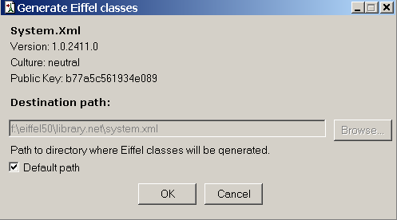
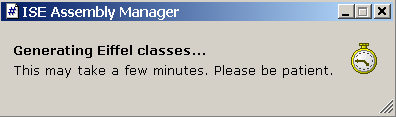

The Eiffel generation dialog
The Eiffel generation dialog enables you to update the Eiffel classes corresponding to an imported assembly. This may be useful in case you mistakenly deleted the folder containing the Eiffel classes.
At the top of the dialog, the name, version, culture and public key of the assembly to update are repeated to avoid any misunderstanding.
Then you have to choose the folder where Eiffel classes will be generated. Two possibilities:
- Check the box `default path' (which is checked by default) and the automatically-generated sources will be saved in the folder, whose filename is written in the disabled text field, that is "$ISE_EIFFEL\library.net\assembly_name"

- Uncheck the option `default path' and browse for another folder by clicking on the `Browse' button or type it directly in the text field provided.
You must be aware that ISE Assembly Manager will automatically create a subfolder (with the same name as the selected assembly) in the folder you have specified.
Therefore you do not need to specify a path like "C:\my_assemblies\system" if you are currently updating the assembly `System.dll'. "C:\my_assemblies" is sufficient since a subfolder "System" will automatically be created. Otherwise the generated classes will be in the folder "C:\my_assemblies\system\system", which is certainly not the result you expected!
At this point, you still have the possibility not to update the Eiffel classes by clicking on `Cancel'.
If you click on `OK', ISE Assembly Manager will launch the generation of Eiffel classes corresponding to the selected assembly. Since that may take a few minutes, a message box is displayed while the code is being generated and disappears when code generation is complete.
